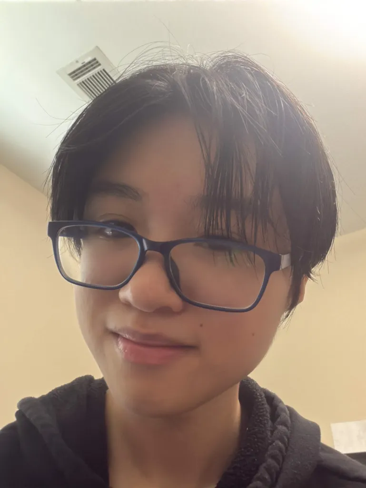
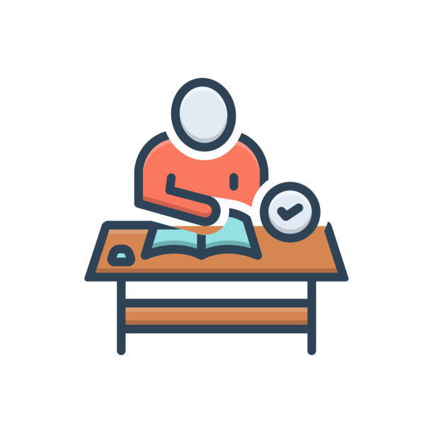
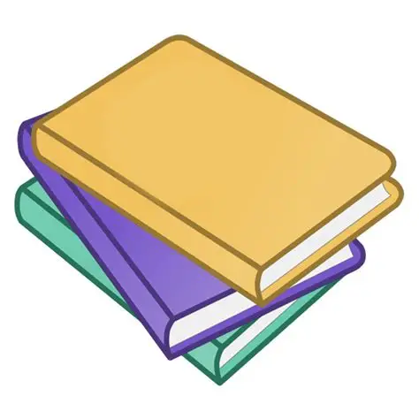

Web Development
This homepage is one of my web development assignments. It is helping me practice HTML, CSS, page structure, and responsive design.
Status: IN PROGRESS

Someone who is working to become a artist/game dev. Here you can check out my projects, interests, and get to know me! I hope we can get along and work well together!
Welcome to my website! My name is Cassie Nguyen, and this is where I can share some of the things I have worked on and things that I am interested in.
I enjoy making games, webcomics, digital art, and other creative projects. I am trying my best to make things that can make other people happy. If something I make makes you happy, then that would be great!
I am currently a student working on my education and learning more about computers and web development. I am interested in creative projects and enjoy finding different ways to combine technology with things such as writing, art, and games.
I am still learning and do not have everything figured out yet, but I want to keep improving and making things that I can be proud of. I also want to continue learning skills that can help me with future projects.
Major: Computer Science
Year: December 2026
University: Georgia State University
This section will contain some of my coursework, assignments, and projects. I am still working on adding things here, so there may not be very much available yet.
This homepage is one of my web development assignments. It is helping me practice HTML, CSS, page structure, and responsive design.
Status: IN PROGRESS
We haven't done any projects yet so there is nothing here yet.
Status: WORK IN PROGRESS
We haven't done any projects yet so there is nothing here yet.
Status: WORK IN PROGRESS

There are a lot of different things that I enjoy doing, especially when I can use them to be creative.

If you would like to find me online or see some of the things I work on, you can use the links below.